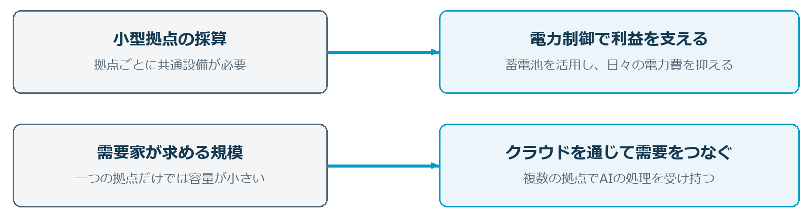
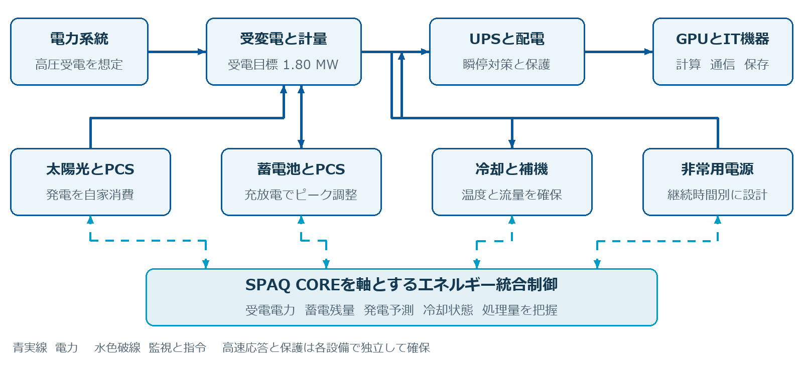
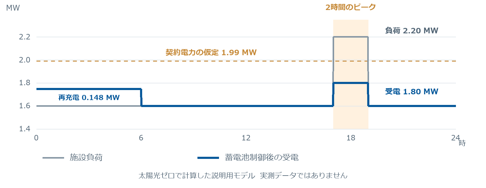
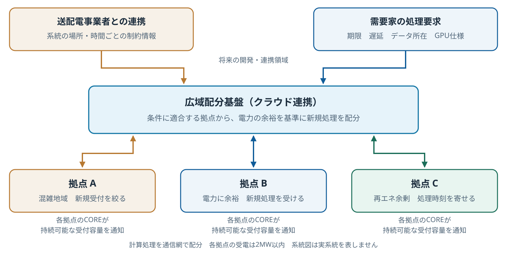

1-1 大型DCが直面する電力と用地の壁
大きくつくり、効率よく動かす。その大きさが、いま建設の壁にもなっています。
AIデータセンターには、大規模に集約する合理性があります。多くのサーバーで電源、冷却、監視などの共通設備を使えるため、一定の条件では計算能力あたりの投資負担を抑えられます。多数のGPUを密接につなぐ大規模なAI学習にも適しています。
しかし、AIの需要が急速に増える今、その「大きさ」が二つの制約にぶつかっています。必要とされる計算能力を、必要な時期に届けることが難しくなっているのです。[1]
一つ目は電力が届くまでの時間
大きなDCを動かすには、大容量の電力が必要です。特別高圧で受電する大型案件では、送電線や変電所の増強が必要になることがあり、建物を建てる準備ができても、電力供給を待たなければならない場合があります。
二つ目は条件の揃う土地を見つける難しさ
必要なのは、広い土地だけではありません。十分な電力を引き込めること、通信回線を確保できること、建物や設備を設置できること、騒音・排熱などについて地域と調整できること。それらが一つの場所で成立する必要があります。
土地や設備の準備を進めても、運転を始めるまでは売上が生まれません。工期の長期化と用地確保の難しさは、資金負担を増やし、将来の需要を読む難しさも大きくします。そこで私たちは、日本で着手しやすい規模に小さくし、すでにある建物と土地を生かす方法に着目しました。
1-2 小型化と既存施設の転用で建てやすくする
受電は2MW以内。最初の有力候補は、閉店したパチンコ店です。
AI CITY JAPANが提案するのは、必要な電力を抑えた小型のAIデータセンターを、地域ごとに展開するモデルです。電力と用地の二つの壁を、規模と立地の選び方から解きほぐします。
電力の壁には高圧契約で始める規模を
施設全体の受電を2MW以内に収め、高圧契約で開始する構成を選びます。一度に必要とする電力を小さくし、大規模な供給設備の増強を待たずに着手できる候補を探す方針です。
蓄電池を積極的に設置し、電力を最も多く使う時間帯の受電を抑えます。必要容量と供給工事を早い段階で確認し、開業までの期間を短くできる案件から実現する。収益が生まれる時期を早め、投資回収の見通しを立てやすくすることが狙いです。
用地の壁にはパチンコ店の転用を
パチンコ店には、まとまった建物や駐車場、搬入路、電気設備を備える物件があります。条件の合う施設を転用できれば、用地取得からすべてを新設する負担を抑えられます。私たちは、こうした既存資産を小型DCの有力な候補と考えています。
全国のぱちんこ営業所数は、2024年の6,706件から2025年には6,464件へ減少しました。[10] 閉店後の資産に新しい用途をつくることは、所有者にも地域にも意味があります。全国にある既存施設を対象に、電力・建物・敷地の条件が合う物件を選んでいきます。
小型データセンターには二つの壁があります。小さな拠点にも電源や冷却などの共通設備が必要で、投資効率が下がりやすいこと。そして、大きな計算能力を求める需要家に、一棟の小型DCだけでは応えにくいことです。
この採算と需要の壁を越えることが、本事業の核心です。
1-3 電力制御とクラウド連携で事業を成立させる
小さく建て、設備を日々働かせ、拠点をつないで需要に応える。
小型DCの利点を生かすには、拠点ごとの採算と、計算能力を使ってもらう仕組みが必要です。AI CITY JAPANは、この二つを一体でつくります。

採算の壁には電力制御を
電力制御でデータセンターの採算性を上げる技術は既に複数が研究されています。しかしそのいずれもが決め手とはなっていません。電力料金は設置環境、気温、日照といった気象条件に左右され、机上のロジックだけで削減出来るものではないのです。
本構想は、3,000件の太陽光設備最適化実績に基づいて開発された電力削減技術「SPAQ CORE」を採用しています。この技術は産業用電力受電施設において実績のある技術で、実際に電気代の削減に成功しています。また同シミュレーションは高く評価されており、シミュレーションに基づいた太陽光パネルや蓄電池の購入融資が実際に承認されています。
需要の壁にはクラウドを通じた拠点連携を
たしかに大規模なAI学習には、多数のGPUを近くに集める必要があります。しかし、AIを実際に利用する推論用途では必ずしも大規模である必要はありません。つまり、開発には大規模なデータセンターが必要ですが、日常使いのために必要なデータセンターはそれよりずっと小さいサイズで十分なのです。
AI CITY JAPANは、大手GPUメーカーおよびAIクラウドパートナーと具体的な協議を進めています。[11] AI向けクラウドを提供するパートナーとの連携を通じ、複数の小型DCが処理を受け持ち、需要家が必要な計算能力をサービスとして利用できる形を実現します。
建設しやすい拠点を増やし、電力制御で採算を支え、クラウドを通じて需要につなぐ。この仕組みを全国へ広げることが本事業の成長につながります。
※非常用電源の容量と機能は別途確保します。クラウドパートナー等との協議は進行中であり、提携の成立・需要契約・拠点間配分の実装は今後具体化します。
1-4 小型DCの市場性
AI・クラウドの利用拡大により、データセンターの需要は増えています。CBREの2026年調査では、東京市場の空室率は6%、平均募集賃料は280米ドル／kW・月でした。一方、電力確保が新たな供給を制約しています。こうした市場で、条件に合う既存施設を活用し、必要な規模から開業する小型DCには事業機会があります。[市場資料1]
私たちは、パチンコ店転用型の施設投資として一棟30億円を想定しています。需要契約と受電条件を確認してから一拠点ずつ着手することで、需要に先行する投資を抑え、初号機の運営実績を次の拠点へ反映する方針です。
施設提供モデルの概算比較
GPUを需要家が保有し、施設・電源・冷却を提供するモデルです。小型は受電2MW未満、販売可能IT容量1.5MWと仮定します。料金は電気代別の月額25,000円／IT-kW、安定時の契約率は90%として比較しました。
| 項目 | 店舗転用 | 小型新築 | 大型新築 |
|---|---|---|---|
| 販売可能IT容量 | 1.5MW | 1.5MW | 40MW |
| 初期施設投資 | 30億円 | 39億円 | 1,000億円 |
| IT 1MWあたり投資 | 20億円 | 26億円 | 25億円 |
| 開業までの期間 | 18か月（発注〜開業最短半年目標） | 24か月 | 48か月 |
| 更新留保後の年間余剰 | 2.20億円 | 2.06億円 | 67.60億円 |
| 年間余剰／初期施設投資 | 7.3% | 5.3% | 6.8% |
この条件では、転用型は同規模の新築に対して投資負担を抑えられます。大型に対しては単位投資額と開業時期に利点がある一方、運営規模の効率もあるため、利回り差は約0.6ポイントです。小型という理由だけで安全性が保証されるものではありません。
30億円モデルを成立させる条件
一棟30億円で、年間余剰を初期投資の8%（比較用の目標）にするには、契約率90%なら月額約26,300円／IT-kW、月額25,000円なら契約率約94.7%が必要です。単価25,000円、契約率90%を維持する場合は、総投資約27.9億円以下が同じ目標の目安になります。
転用総額が約32.1億円を超えるか、転用型だけの利用料が約4.4%下がると、他の基準条件が同じでも大型の利回りと並びます。投資増・料金低下・契約率低下を重ねた悪化ケースでは、転用型1.1%、大型1.6%となり、優位性が逆転しました。
GPU自社保有モデルの概算と段階投資
GPUを自社保有する場合は、施設収支と区別して判断します。512基、サーバー・内部ネットワーク等を含む取得額25.6億円、実現単価500円／GPU時、課金稼働率70%と仮定すると、施設との合計投資は55.6億円です。GPUの4年更新分、施設更新分、電力費、運営費、販売手数料を控除した年換算余剰は約3.0億円、合計投資に対して約5.4%となります。
1-5 パチンコ店という豊富な候補地
全国に広がる既存施設と、毎年生まれる用途転換の機会。
小型DCを全国へ展開するうえで、パチンコ店はまとまった候補地の母数を持つ施設です。警察庁によると、パチスロ専門店等を含む全国の営業所数は2025年末で6,464件。2021年末の8,458件から4年間で1,994件減少し、2025年だけでも242件の純減となりました。店舗の集約が進むなか、既存の建物と敷地に新しい用途を与える機会が継続的に生まれています。[候補地資料1]
店舗減少から見た候補物件の供給規模
2025年末の6,464件を基点に、年間の減少率を2.0%、3.6%、5.0%と置き、用途転換の機会が生まれる規模を試算しました。3.6%は直近の減少率に近い仮定です。
| 減少率の仮定 | 5年間（2026〜2030年） | 8年間（2026〜2033年） | 10年間（2026〜2035年） |
|---|---|---|---|
| 緩やかな減少（年2.0%） | 約621件 | 約965件 | 約1,182件 |
| 直近に近い減少（年3.6%） | 約1,083件 | 約1,643件 | 約1,984件 |
| 減少の加速（年5.0%） | 約1,462件 | 約2,176件 | 約2,594件 |
直近に近いペースなら、5年間で約1,100件、10年間で約2,000件の店舗減少に相当します。また探索対象は今後閉店する店舗に限らず、すでに閉店して建物・敷地が残る物件、営業中でも売却や用途転換を検討する施設、営業を続けながら活用できる余剰駐車場も対象にできます。全国6,464件という既存施設の母数と、毎年生じる店舗再編を背景に、候補地を継続的に探索できることが本モデルの強みです。AI CITY JAPANは、所有者・運営企業・不動産事業者との連携を通じ、受電、建物、通信、需要、改修費の条件が揃う物件を選び、段階的な全国展開につなげます。
2-1 技術の核心となるエネルギー統合制御
受電の枠を守りながら、使える計算能力を引き出す。
エネルギーマネジメントシステムの強みはその統合制御と、制御を支える3,000件もの施工実績データにあります。豊富な実績に基づいたシミュレーションでデータセンターの電力削減を実現します。
この技術は「設備が大きすぎても効果が薄く、小さすぎても経済効果が低い」という特性がありますが、2MW級データセンターはこの技術が最も効率を発揮するサイズです。

電力と熱を同時に扱う
太陽光は発電時の受電を減らし、蓄電池は電力を時間的に移します。冷却は温度・流量の許容範囲を守り、ポンプやファンの運転を最適化します。液冷GPUでも周辺機器の空冷と屋外への放熱は必要です。[3] 冷却を単純に止めてピークを下げる設計にはしません。
処理の受付まで制御対象を広げる
蓄電残量と発電・負荷予測から、持続可能な計算量を求めます。余裕が減る見込みなら、新規処理の受付を早めに絞り、既存の処理が終わるまでを蓄電池で支えます。必要に応じて、需要家と合意したGPU電力上限や待ち行列を使い、急な変動にも対応します。
初号機で検証すること
受電の最大値と30分デマンド、蓄電残量、応答遅れ、冷却温度、処理性能を同時に記録します。蓄電池停止や通信断時にも受電上限を守れるよう、ITの電力制限と縮退運転を検証します。ピーク電力、使用電力量、設備費の改善を別々に評価し、商用運転の品質と両立する条件を確立します。
2-2 受電総電力を2MW以内に収めるモデル
非常用蓄電池を積極的に使い、ピークの時間を越える。
非常用蓄電池を電力ピークの削減に使う技術は他社でも研究実証されていますが、私たちはそれを机上の空論で終わらせません。
蓄電池と電力ピークの間には投資効果が最大となるポイントが存在し、それは各設置ロケーションによって異なります。各設置場所ごとに蓄電池と太陽光、そして電力ピークの最適化問題が存在するのです。その相関を解き明かし、その場所に最適な蓄電池と太陽光パネルの枚数を決めるシミュレーション＆設計能力によって、非常用蓄電池は利益を生む収益装置に変わります。
以下は、施設負荷が一時的に2.20MWとなる場合も、受電を1.80MWに抑えるイメージ図です。太陽光発電はゼロとし、冷却・補機・電源損失も施設負荷に含めます。

| 項目 | 試算条件と計算 |
|---|---|
| ピーク時の施設負荷 | IT 1.80 MW ＋ 冷却・補機・損失 0.40 MW ＝ 2.20 MW |
| 受電と蓄電池 | 2.20 MW − 放電0.40 MW ＝ 受電1.80 MW（2時間） |
| 蓄電池の仮構成 | PCS出力 0.50 MW ／ 公称容量 2.0 MWh |
| 必要な放電量 | 0.40 MW × 2時間 ＝ 0.80 MWh |
| 翌ピークまでの再充電 | 往復効率90％なら入力 0.889 MWh。6時間で平均 0.148 MW。 |
| 低負荷時の受電 | 施設 1.60 MW ＋ 充電 0.148 MW ＝ 約 1.748 MW |
※SOCは蓄電池の充電状態。ピーク対策用蓄電池の容量をUPSや停電時の予備電源に重複計上しません。電池損失により、このモデルの総受電電力量は蓄電池なしの場合より増えます。負荷、蓄電池容量、効率、SOC幅、劣化係数は効果の仕組みを示す仮定であり、系統からの受電は2MW以内を前提とし、契約の成立には個別協議と設備設計が必要です。
3 プロジェクト推進体制
プロジェクト幹事企業である AiCITY JAPAN株式会社（AI CITY JAPAN） を中心に、計算基盤、エネルギー設備、電力、制御技術、学術研究の専門性を結集します。各分野の知見を一つの商品にまとめ、初号機の事業化から標準化、全国展開へとつなげます。
| 担当領域 | 参画企業・機関 | 本プロジェクトでの役割案 |
|---|---|---|
| 事業企画・全体統括 |
AiCITY JAPAN株式会社 （AI CITY JAPAN） 公式サイト ↗ |
プロジェクトの幹事企業。事業計画、用地開発、需要家開拓、資金調達、参画企業間の調整を統括し、初号機の事業化と全国展開を推進する。 |
| エネルギー設備 | グローバル新エネルギー企業 | 太陽光・蓄電池等のエネルギー設備について、機器構成と調達条件の具体化に協力。小型DCに適した設備の標準化を進める。[4] |
| AI計算基盤・機器調達 | 国内大手エレクトロニクス商社 （プライム上場企業） |
AIサーバー等の機器選定・調達と技術支援。需要家が求める計算能力と、施設側の電源・冷却条件を整合させる。[5] |
| 電力分野の協力 | 大手電力会社 | 電力分野の知見と関係先との連携を通じ、事業の具体化に協力する。電力契約・調達面の支援範囲を整理する。 |
| エネルギー統合制御 | 電力AI・制御技術パートナー （SPAQ CORE） |
SPAQ COREを用い、太陽光・蓄電池・空調等の統合制御を具体化。受電ピークの抑制と設備運用の最適化を担う。 |
| 研究・学術連携 | 国内大学（共同研究機関） | エネルギーマネジメントに関する研究知見を提供し、制御手法や実証結果の評価に協力する。 |
大手GPUメーカーおよびAIクラウドパートナーとは、具体的な協議を進めています。需要・クラウド連携の協議先として位置付け、上記の参画体制とは区別しています。
※公開ページ上では参画・協議先企業の固有名詞を伏せて記載しています。
社会に溶け込む、AIインフラをつくる
AIは、仕事や暮らしのさまざまな場面を支えるようになりました。その成長を受け止めるデータセンターも、社会に欠かせない基盤になりつつあります。一方で、大きな電力需要や建設負担、地域との合意形成は、事業の大きな課題となっています。
私たちは、AIの成長と地域の暮らしが、ともに前へ進める方法をつくりたいと考えています。今や人の生活に欠かせないモノになりつつあるAI。それを支えるインフラもまた、社会に溶け込み、身近になるべきというのが私たちの考えです。
今あるものを尊重し、資源に新しい価値を見いだす。
「もっと社会に溶け込めるデータセンター」という理念のもと、幹事企業であるAiCITY JAPAN株式会社（AI CITY JAPAN）をはじめ、グローバル新エネルギー企業、国内プライム上場の電子機器商社、大手電力会社、先端電力マネジメント技術（SPAQ CORE）、そして学術機関が次々に結集しました。参画した企業のすべてがデータセンターの現状に問題意識を持っており、専門企業の力を結集してAIと自然の共生を目指し、よりよい社会の実現に貢献してまいります。
4-1 初号機から全国展開へのロードマップ
まず一棟で証明し、再現できる形にして広げる。
各段階で投資判断に必要な成果を揃え、次の規模へ進みます。初号機は、全国展開に使える商品と運用をつくるための最初の事業拠点です。
需要と候補地を組み合わせる
商品思想と協力ネットワークを基に、候補地、需要家、設備構成を並行して検討します。高圧供給の見通し、通信、建物・敷地の適合、利用容量・期間を確認し、事業化に進める案件を絞ります。
初号機を建設し商用運転へ進める
設計と調達条件を確定し、受電、蓄電池、冷却、計算設備を統合します。設備試験と連携試験を通じて安全・性能を確認し、契約した需要に対してサービスを開始します。
標準化して複数拠点へ展開する
設計、調達、監視、障害対応を標準化し、条件の合う地域へ横展開します。土地・設備の保有主体を柔軟に組み合わせ、共通運用基盤を広げます。
電力に応じて計算を配分する
各拠点が電力と冷却の余裕を通知し、広域の配分基盤が新規処理の行き先を決めます。対応可能なジョブから始め、電力調整と顧客への品質保証が両立する範囲を広げます。
送配電網と協調する計算基盤を実現する
最終形は、系統の混雑や再エネの余剰に応じ、処理する場所と時間を調整できる全国ネットワークです。送配電事業者等と連携し、AIの需要を電力網の運用に役立つ柔軟な需要へ育てます。
4-2 最終形となる送配電網と計算の協調
電力を使える場所へ、AIに必要な計算力を届ける。
一つの地域で電力の余裕が減ったとき、別の地域が新しい処理を受け持つ。再エネが余る時間には、その地域で処理を進める。これが、本構想が目指す最終形です。

新規処理の行き先を変える
各拠点は、蓄電残量と予測負荷から受付可能な処理量を通知します。広域の司令塔は、遅延・期限・データ所在・GPU仕様の条件を満たす拠点の中から、電力の余裕を優先して新規処理を配分します。実行中の処理の完了には時間がかかり、待機電力も残るため、蓄電池と受付制御を組み合わせます。
※拠点間配分と系統連携は将来の開発・実証対象です。電力価格やCO₂係数だけでは系統混雑を判定できません。同期通信の多い分散学習等は対象を選び、系統増強を不要にできるとは想定しません。
6 事業マイルストーン・協業のご提案
最初の一棟から、社会の計算基盤を育てる仲間へ。
AI CITY JAPANは、高圧で開始する低負担・分散型AIデータセンターを入口に、拠点を増やすほど価値が蓄積する会社を目指します。最初に実装すべき商品があり、その先に、電力と計算需要をつなぐ成長の道筋があります。
本構想を事業へ進めるために、出資ならびに事業開発・需要・技術の協業をご提案します。初号機の成果を共通基盤に変え、次の地域へ届ける段階からご参加いただきたいと考えています。
出資を事業の共通基盤へ使う
| 資金を振り向ける領域 | 初期に形にする成果 |
|---|---|
| 商品化と初号機の事業開発 | 候補地評価、需要家との条件具体化、標準設計、調達・事業計画。 |
| 統合制御と運用の実装 | 機器接続、受電制御、性能検証、監視・保守手順と運用データ。 |
| 横展開と広域配分の準備 | 次の案件形成、運用体制、受付容量を共有する仕組み、顧客基盤。 |
※個別拠点の建設費やGPU調達費は、顧客と設備保有主体を定めたうえで別途組成します。出資額、資金配分、企業価値評価、株主条件は、初号機の見積・需要条件と成長計画を合わせて協議します。
ともに埋めたい実行上の条件
計算能力を必要とする需要家、条件に合う土地・建物（既存遊技施設・商業施設等）、設計施工と保守の担い手、商品化と展開を支える資金が必要です。各パートナーの持つ資源を、初号機の一つの事業計画に集めます。
次の協議では、初号機の候補条件、需要家との進捗、想定する役割、資金使途を共有し、誰が何を担い、どの成果を確認して次へ進むかを具体化します。一棟が動けば、地域の資産に新しい役割が生まれる。拠点がつながれば、AIの成長を支える電力の使い方が変わる。その未来を、AI CITY JAPANと共につくっていただきたいと考えています。
参考資料と本構想の前提
外部情報は各機関・企業の一次資料を参照し、図版と試算は本企画の説明用として作成しています（参照確認日：2026年10月28日）。
-
[1]
IEA「Key Questions on Energy and AI — Executive summary」（2026年）
世界需要の見通しと供給制約。 -
[2]
高圧電力基本契約要綱（2026年4月1日実施）
契約電力の適用範囲（原則2,000kW未満）と決定方法。 -
[3]
DGX GB200 User Guide Hardware Overview
液冷と空冷の構成。採用機種の確定を意味しない。 -
[4]
参画グローバル新エネルギー企業 Energy Storage 事業紹介
エネルギー関連製品・サービスの公開事業領域。 -
[5]
参画エレクトロニクス商社 会社概要
電子機器・部品等の供給・技術支援に関する事業領域。 -
[6]
Google「A new milestone for smart, affordable electricity growth」（2026年3月19日）
需要応答の契約容量とML処理の調整。 -
[7]
NEDO「分散型エネルギーリソースおよび高電圧直流送電設備を活用した2件の新たなフレキシビリティ技術開発に着手します」（2025年）
-
[8]
東京電力パワーグリッド「大規模供給ポテンシャルマップ」（2026年8月31日）
5万kW以上向けの概算工期。 -
[9]
資源エネルギー庁「エネルギー白書2025」第1部第2章第2節
電力と通信を連携させるDC立地の方針。 -
[10]
国家公安委員会 2026年4月23日 説明資料5
ぱちんこ営業の許可数の2024年・2025年比較。 -
[11]
AIクラウドパートナープログラム公開資料
AIクラウド事業者の役割。個別の提携成立を示す資料ではない。 -
[市場資料1]
CBRE「Global Data Center Trends 2026」（Q1 2026）
https://www.cbre.com/insights/reports/global-data-center-trends-2026
賃料は250～500kW需要の募集価格。投資比較試算（2026年10月28日）における悪化ケースは転用投資39億円・大型1,250億円、料金20,000円／IT-kW月、契約率65%。本試算は案件の概算採算であり、企業価値評価ではありません。 -
[候補地資料1]
警察庁「令和7年における風俗営業等の現状と風俗関係事犯等の取締り状況について」図3・図5（2026年10月28日確認）
https://www.npa.go.jp/publications/statistics/safetylife/080423huzokukankeitoukei.pdf
受電モデルの負荷、蓄電池容量、効率、SOC幅、劣化係数は、効果の仕組みを示す仮定です。工場等の削減実績をAIデータセンターへ転用していません。系統からの受電は2MW以内を前提とし、契約の成立には個別協議と設備設計が必要です。
現段階は事業構想・商品化の検討です。大手GPUメーカーおよびAIクラウドパートナーとは具体的な協議を進めています。正式参画、需要契約、広域配分の実装、系統連携、費用削減率や投資収益率は今後具体化します。
企画者：AiCITY JAPAN株式会社（AI CITY JAPAN）